<div class="container">
  <div id="contents" class="col-md-12 main-content"><h1 xmlns="http://www.w3.org/1999/xhtml" id="toc-id-20">Mini-pat: a mine needs a lifting system</h1>

    <p xmlns="http://www.w3.org/1999/xhtml" class="x--Body-opener">This mini-PAT will run over four
    weeks. For this mini-PAT, you should form teams. Each team will
    pretend to be a mechanical engineering company. Each company
    will submit a tender for the design and construction of a
    "mine-lifting system", commonly called "mine shaft
    headgear".</p>

    <p xmlns="http://www.w3.org/1999/xhtml" class="x--Body-opener">The lifting system is used to take
    miners underground and back up again. It is also used to lift
    the mined ore to the surface. After you have designed your
    lifting system, you will have to make a model of it. The model
    will have a mine winch, shaft headgear and a lift cage.</p>

        <figure xmlns="http://www.w3.org/1999/xhtml">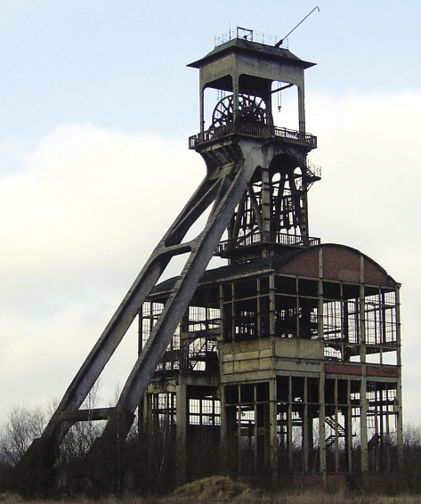<figcaption>Figure 1: This is the tower above an old
    mine shaft. A cable winds around "sheave" wheels on the
    "headgear" at the top. These cables are attached to a lift that
    transports miners, machines and ore into and out of the
    mine.</figcaption></figure><figure xmlns="http://www.w3.org/1999/xhtml">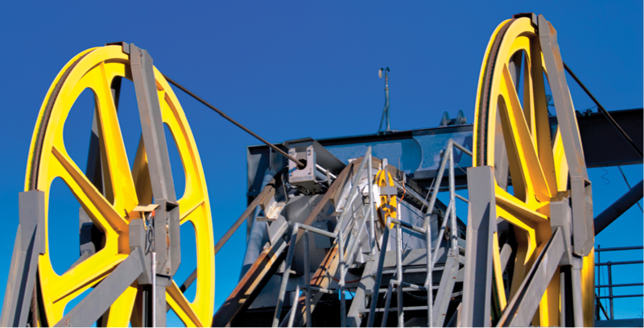<figcaption>Figure 2: This photograph shows detail
    of sheave wheels used for pulling in a cable. The sheave wheels
    in the photograph are used for a cable car, but they are
    similar to the sheave wheels used on a mine's winch
    system.</figcaption></figure><h2 xmlns="http://www.w3.org/1999/xhtml" id="toc-id-21">Week 1</h2>

    <h4 xmlns="http://www.w3.org/1999/xhtml">An opportunity to tender for a mining contract</h4>

    <p xmlns="http://www.w3.org/1999/xhtml" class="x--Body-story"><i>Platinum, a very valuable metal, has
    been found on land belonging to a tribe in a rural area.
    Samples show that the platinum is only 500 m below the
    surface.</i></p>

    <p xmlns="http://www.w3.org/1999/xhtml" class="x--Body-story"><i>An international and South African
    joint venture company, called Platinum Stars, has decided to
    invest money in this project. They want to sink a shaft to the
    500 m point to take a few samples. Then they will decide on the
    best mining method.</i></p>

    <p xmlns="http://www.w3.org/1999/xhtml" class="x--Body-story"><i>Your engineering company wants to
    submit a <b>tender</b>for
    the construction of the shaft headgear. The headgearmust be
    able to transport miners and equipment 500 munderground. It
    must also be able to lift platinum orethat weighs 10 tons back
    up to the surface.</i></p>

    <div xmlns="http://www.w3.org/1999/xhtml" class="aside">
      <p class="x--Body-box-no-indent">A <b>tender</b> is an offer by someone
      to do work at a certain price. When a company "puts out a
      tender", it invites people to apply to do a job for them.</p>
    </div>

    <h4 xmlns="http://www.w3.org/1999/xhtml">Headgears and mine winches</h4>

    <p xmlns="http://www.w3.org/1999/xhtml" class="x--Body-Text para-style-override-28"><b>An overview of a mine shaft</b></p>

    <p xmlns="http://www.w3.org/1999/xhtml" class="x--Body-indent">Study Figure 3 on the following page.
    This picture shows a mine's lifting system. The whole lifting
    system is called the <b>headgear</b>. There are four main
    parts to a mine's headgear:</p>

    <p xmlns="http://www.w3.org/1999/xhtml" class="x--Body-Text"><b>Part 1: The winch or hoist</b> is in
    a winding house. This part of the system is used to wind or
    unwind the steel cable.</p>

    <p xmlns="http://www.w3.org/1999/xhtml" class="x--Body-indent">The hoist is attached to a motor and
    a control system.</p>

    <p xmlns="http://www.w3.org/1999/xhtml" class="x--Body-indent">The mine cage and the skips are
    lowered into the mine when a steel cable unwinds from the
    winch.</p>

    <p xmlns="http://www.w3.org/1999/xhtml" class="x--Body-indent">The mine cage and skips are raised
    when the steel cable winds up again.</p>

    <p xmlns="http://www.w3.org/1999/xhtml" class="x--Body-Text"><b>Part 2: The sheave wheel</b> is a
    pulley wheel that sits above the mine shaft. The hoist cable
    passes over the sheave wheel and then down the shaft of the
    mine.</p>

    <p xmlns="http://www.w3.org/1999/xhtml" class="x--Body-indent">The sheave wheel reduces the sliding
    friction of the mine cable.</p>

    <p xmlns="http://www.w3.org/1999/xhtml" class="x--Body-Text"><b>Part 3: The head frame</b> is the
    structure that supports the sheave wheel. It must be strong
    enough to keep the sheave wheel in place when it lifts the
    heavy mine cage.</p>

    <p xmlns="http://www.w3.org/1999/xhtml" class="x--Body-indent">The left "legs" of the head frame
    slope towards the hoist. This is due to the tension in the
    cable pulling the whole frame in that direction. The sloping
    legs prevent the head frame from toppling or falling over.</p>

    <p xmlns="http://www.w3.org/1999/xhtml" class="x--Body-Text"><b>Part 4: The cage and skips.</b> The
    cage is used to transport miners and equipment up and down the
    mine. Attached alongside or underneath the cage are skips.</p>

    <p xmlns="http://www.w3.org/1999/xhtml" class="x--Body-indent">Skips are used to bring the ore and
    the waste rock out of the mine.</p>

    <figure xmlns="http://www.w3.org/1999/xhtml">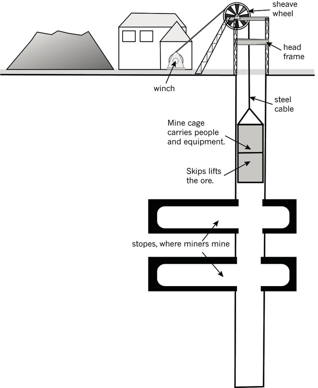<figcaption>Figure 3: A mine's lifting system</figcaption></figure><h3 xmlns="http://www.w3.org/1999/xhtml" class="x--Head-investigation para-style-override-50">Investigate: mine shaft headgear and head frame (30 minutes)</h3>

    <p xmlns="http://www.w3.org/1999/xhtml" class="x--Body-Text para-style-override-28"><b><b>Individual work</b></b></p>

    <p xmlns="http://www.w3.org/1999/xhtml" class="x--Body-Text">Use the picture in Figure 3 and your
    own information to answer the questions below:</p>

    <p xmlns="http://www.w3.org/1999/xhtml" class="x--Body-investigation-hanging">1. What does the
    headgear of a mine do?  </p>
    <hr xmlns="http://www.w3.org/1999/xhtml"/><p xmlns="http://www.w3.org/1999/xhtml" class="x--Body-investigation-hanging">2. What happens in the
    winding house of a mine?  </p>
    <hr xmlns="http://www.w3.org/1999/xhtml"/><p xmlns="http://www.w3.org/1999/xhtml" class="x--Body-investigation-hanging">3. Explain what a
    sheave wheel is and what it does.  </p>
    <hr xmlns="http://www.w3.org/1999/xhtml"/><p xmlns="http://www.w3.org/1999/xhtml" class="x--Body-investigation-hanging">4. What does a head
    frame do?  </p>
    <hr xmlns="http://www.w3.org/1999/xhtml"/><p xmlns="http://www.w3.org/1999/xhtml" class="x--Body-investigation-hanging">5. Why do the legs on
    a head frame always slope towards the winch?  </p>
    <hr xmlns="http://www.w3.org/1999/xhtml"/><p xmlns="http://www.w3.org/1999/xhtml" class="x--Body-investigation-hanging">6. What do you call
    the two parts of the lift that goes down a
    mine?  </p>
    <hr xmlns="http://www.w3.org/1999/xhtml"/><p xmlns="http://www.w3.org/1999/xhtml" class="x--Body-investigation-hanging">7. What do these two
    parts of the lift do?  </p>
    <hr xmlns="http://www.w3.org/1999/xhtml"/><p xmlns="http://www.w3.org/1999/xhtml" class="x--Body-indent">Look at the photograph in Figures 1
    and 2. The photographs show the head frame and sheave wheel on
    the tower above a mine shaft.</p>

    <p xmlns="http://www.w3.org/1999/xhtml" class="x--Body-indent">Study the structure of the head frame
    and then answer the questions below. You will have to use your
    knowledge of frame structures to answer the questions.</p>

    <p xmlns="http://www.w3.org/1999/xhtml" class="x--Body-investigation-hanging">8. Do you think
    I-beams are a good thing to use for head frame
    supports? Why?  </p>
    <hr xmlns="http://www.w3.org/1999/xhtml"/><p xmlns="http://www.w3.org/1999/xhtml" class="x--Body-investigation-hanging">9. Where do you see
    triangulation used on this structure? Explain how triangulation
    helps to make the head frame structure
    stronger.  </p>
    <hr xmlns="http://www.w3.org/1999/xhtml"/><p xmlns="http://www.w3.org/1999/xhtml" class="x--Body-investigation-hanging">10. What has been used
    to stop the head frame from being pulled over by the
    winch?  </p>
    <hr xmlns="http://www.w3.org/1999/xhtml"/><p xmlns="http://www.w3.org/1999/xhtml" class="x--Body-investigation-hanging">11. Look at the sheave
    wheel. Has it been placed in the middle of the upright column?
    Why do you think it is important to place the sheave wheel in
    exactly the right place on the head frame?  </p>
    <hr xmlns="http://www.w3.org/1999/xhtml"/><p xmlns="http://www.w3.org/1999/xhtml" class="x--Body-investigation-hanging">12. Make a 2D sketch
    of a head frame and sheave wheel in the space on thenext
    page.  </p>

    <p xmlns="http://www.w3.org/1999/xhtml" class="x--Body-Text para-style-override-51">Total [7]</p>

    <h3 xmlns="http://www.w3.org/1999/xhtml">Investigate: mine winches (30 minutes)</h3>

    <p xmlns="http://www.w3.org/1999/xhtml" class="x--Body-Text para-style-override-28"><b>Individual work</b></p>

    <p xmlns="http://www.w3.org/1999/xhtml" class="x--Body-Text">Look at the pictures in Figure 4. The
    pictures show two different types of mining hoists. The first
    one has one sheave wheel, while the second has two sheave
    wheels. Use these pictures to help you answer the questions
    below:</p>

    <figure xmlns="http://www.w3.org/1999/xhtml">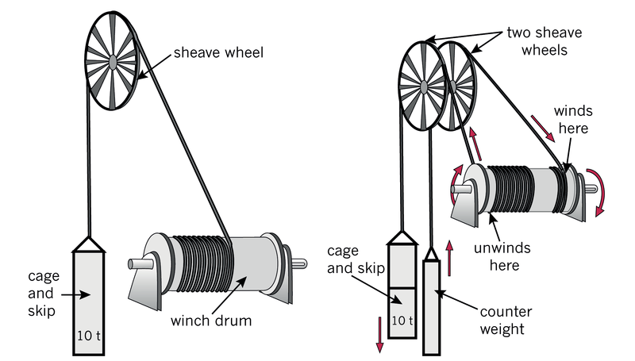<figcaption>Figure 4: These are both mine winches
    with drum hoists. The winch on the right has two sheave wheels
    and a counterweight.</figcaption></figure><p xmlns="http://www.w3.org/1999/xhtml" class="x--Body-investigation-hanging">1. What are the
    differences between the two mine winches shown
    here? (½)</p>
    <hr xmlns="http://www.w3.org/1999/xhtml"/><p xmlns="http://www.w3.org/1999/xhtml" class="x--Body-investigation-hanging">2. What do you think a
    counterweight does for a mine winding system?</p><p xmlns="http://www.w3.org/1999/xhtml"><b>Hint</b>: imagine winding the winch
    by hand. (1)</p>
    <hr xmlns="http://www.w3.org/1999/xhtml"/><p xmlns="http://www.w3.org/1999/xhtml" class="x--Body-investigation-hanging">3. If the mine winch
    drum diameter is 6 m, calculate how far the cage will drop for
    each single rotation of the drum. (½)</p>
    <hr xmlns="http://www.w3.org/1999/xhtml"/><p xmlns="http://www.w3.org/1999/xhtml" class="x--Body-investigation-hanging">4. If the mine winch
    drum diameter is 6 m, calculate how far the counterweight will
    lift for each single rotation of the drum. (½)</p>
    <hr xmlns="http://www.w3.org/1999/xhtml"/><p xmlns="http://www.w3.org/1999/xhtml" class="x--Body-investigation-hanging">5. Calculate how many
    turns of cable you will need on the drum for your cage and skip
    to move up and down by 500 m. (½)</p>
    <hr xmlns="http://www.w3.org/1999/xhtml"/><p xmlns="http://www.w3.org/1999/xhtml" class="x--Body-investigation-hanging">6. Which of the two
    systems in Figure 4 do you think will need the largest motor?
    Explain your answer. (1)</p>
    <hr xmlns="http://www.w3.org/1999/xhtml"/><p xmlns="http://www.w3.org/1999/xhtml" class="x--Body-investigation-hanging">7. Which system will
    be safer? Explain your answer. (1)</p>
    <hr xmlns="http://www.w3.org/1999/xhtml"/><p xmlns="http://www.w3.org/1999/xhtml" class="x--Body-Text para-style-override-51">Total [5]</p>


    <h3 xmlns="http://www.w3.org/1999/xhtml" class="x--Head-investigation-2-line para-style-override-52">Design: design brief, specifications and constraints for a mine shaft headgear (60 minutes)</h3>

    <p xmlns="http://www.w3.org/1999/xhtml" class="x--Body-Text para-style-override-28"><b>Individual work</b></p>

    <p xmlns="http://www.w3.org/1999/xhtml" class="x--Body-Text">Sketch a whole headgear solution that
    might impress Platinum Stars. You should mark your sketch with
    the approximate sizes for:</p>

    <ul xmlns="http://www.w3.org/1999/xhtml"><li class="x--Body-text-bullet">the depth of the shaft,</li>

      <li class="x--Body-text-bullet">the carrying load of the skip
      and the mass of the counterweight,</li>

      <li class="x--Body-text-bullet">the approximate size of the
      winding drum,</li>

      <li class="x--Body-text-bullet">the approximate height of the
      headgear and the sheave wheel, and</li>

      <li class="x--Body-text-bullet">the approximate sizes of the
      mining cage and skip.</li>
    </ul><p xmlns="http://www.w3.org/1999/xhtml" class="x--Body-Text para-style-override-53"><b>Note</b>: You might have to do a bit
    of research on your own.</p>

    <p xmlns="http://www.w3.org/1999/xhtml" class="x--Body-indent">Have another look at the scenario
    titled "An opportunity to tender for a mining contract," at the
    start of this chapter.</p>

    <p xmlns="http://www.w3.org/1999/xhtml" class="x--Body-investigation-hanging para-style-override-28"><b>Write the design brief. Use the following questions to help you:</b></p>

    <p xmlns="http://www.w3.org/1999/xhtml" class="x--Body-investigation-hanging para-style-override-15">1. What
    is the opportunity you are tendering for? (½)</p>
    <hr xmlns="http://www.w3.org/1999/xhtml"/><p xmlns="http://www.w3.org/1999/xhtml" class="x--Body-investigation-hanging para-style-override-15">2. What
    do you need to do to tender for this project? (½)</p>
    <hr xmlns="http://www.w3.org/1999/xhtml"/><p xmlns="http://www.w3.org/1999/xhtml" class="x--Body-investigation-hanging">3. Write the design
    brief in the space below. Start your paragraph with:(1)</p>

    <p xmlns="http://www.w3.org/1999/xhtml" class="x--Body-story para-style-override-15"><i>We are going to
    design and make ...</i></p>
    <hr xmlns="http://www.w3.org/1999/xhtml"/><p xmlns="http://www.w3.org/1999/xhtml" class="x--Body-investigation-hanging para-style-override-28"><b>Write a list of specifications and constraints</b></p>

    <p xmlns="http://www.w3.org/1999/xhtml" class="x--Body-investigation-hanging para-style-override-15">4.
    <b>Think about people</b>:
    Write down at least two things that the mine winch system must
    do <span class="char-style-override-6">for people</span>. How
    should it help the mineworkers? What should it do, or not do,
    for the local people who live near the mine? (1)</p>

    <p xmlns="http://www.w3.org/1999/xhtml" class="x--Body-investigation-hanging para-style-override-15">5.
    <b>Think about purpose</b>:
    What is the headgear for? What must it do? How fast must it
    travel? How far? How much weight does it need to carry? Write
    down at least two things about the purpose of this mine-winch
    system. (1)</p>
    <hr xmlns="http://www.w3.org/1999/xhtml"/><p xmlns="http://www.w3.org/1999/xhtml" class="x--Body-investigation-hanging para-style-override-15">6.
    <b>Think about safety:</b>
    What <span>will happen if something goes wrong? What must your
    system have to try to prevent things from going wrong? What
    things must your system have to deal with emergencies when
    something does go wrong? Write down at least two things that
    w</span>ill help to ensure that your design is safe. (1)</p>
    <hr xmlns="http://www.w3.org/1999/xhtml"/><p xmlns="http://www.w3.org/1999/xhtml" class="x--Body-investigation-hanging para-style-override-15">7.
    <b>Think about the environment:</b> Write down at least two things to help the
    environment when you design and make this headgear
    system. (1)</p>
    <hr xmlns="http://www.w3.org/1999/xhtml"/><p xmlns="http://www.w3.org/1999/xhtml" class="x--Body-investigation-hanging para-style-override-15">8.
    <b>Think about appearance</b>: Do you think appearance matters when you
    design something such as headgear? Can your head frame's
    appearance help you to win the tender? Write down at least two
    things about the way you want your headgear to look. (1)</p>
    <hr xmlns="http://www.w3.org/1999/xhtml"/><p xmlns="http://www.w3.org/1999/xhtml" class="x--Body-investigation-hanging para-style-override-15">9.
    <b>Think about costs:</b>
    What can you say about your costs for this project? Do you want
    the most expensive and the best of everything, or the cheapest
    and simplest, or something in-between? (1)</p>
    <hr xmlns="http://www.w3.org/1999/xhtml"/><p xmlns="http://www.w3.org/1999/xhtml" class="x--Body-Text para-style-override-54">Total [8]</p>

    <h3 xmlns="http://www.w3.org/1999/xhtml">Next week</h3>

    <p xmlns="http://www.w3.org/1999/xhtml" class="x--Body-Text para-style-override-2">Next week, you
    will do Week 2 of your mini-PAT. You will form engineering
    companies, evaluate ideas and choose the best idea. You will
    draw your solutions and begin to prepare your company's
    tender.</p>

    <h2 xmlns="http://www.w3.org/1999/xhtml" id="toc-id-22">Week 2</h2>

    <h4 xmlns="http://www.w3.org/1999/xhtml">Your company prepares a tender</h4>

    <p xmlns="http://www.w3.org/1999/xhtml" class="x--Body-Text">This is the second week of the mini-PAT
    for mechanical systems in Grade 8. During this week, you will
    form your own engineering company.</p>

    <p xmlns="http://www.w3.org/1999/xhtml" class="x--Body-indent">Then you will combine all of the
    ideas you came up with last week, and choose one idea to for
    your tender.</p>

    <p xmlns="http://www.w3.org/1999/xhtml" class="x--Body-indent">You will present this tender to the
    mining joint venture company, Platinum Stars, later in this
    mini-PAT.</p>

    <p xmlns="http://www.w3.org/1999/xhtml" class="x--Body-indent">Platinum Stars will only accept
    tenders from companies. That means that you cannot submit a
    tender as an individual person.</p>

    <p xmlns="http://www.w3.org/1999/xhtml" class="x--Body-indent">A company is formed when two or more
    people come together for business reasons or goals.</p>

    <p xmlns="http://www.w3.org/1999/xhtml" class="x--Body-indent">Your business goal will be to do
    engineering work for Platinum Stars.</p>

    <h3 xmlns="http://www.w3.org/1999/xhtml" class="x--Head-investigation para-style-override-52">Form a company(20 minutes)</h3>

    <p xmlns="http://www.w3.org/1999/xhtml" class="x--Body-Text para-style-override-28"><b>Team work</b></p>

    <p xmlns="http://www.w3.org/1999/xhtml" class="x--Body-investigation-hanging">1. Choose your company
    partners by arranging yourselves into teams of 3 to 5 people.
    Write down the names of each company member. This list of names
    will need to appear on your tender document. Also write your ID
    number next to your name.</p>
    <hr xmlns="http://www.w3.org/1999/xhtml"/><p xmlns="http://www.w3.org/1999/xhtml" class="x--Body-investigation-hanging">2. Write a mission
    statement: Write one short sentence saying what your company
    will do, how you will do it, who you will do it for, and why
    you think you will be able to do it well. Start your sentence
    with the words:</p>

    <p xmlns="http://www.w3.org/1999/xhtml" class="x--Body-story"><i>‘We at Underground
    Mining Engineers aim to ...</i></p>
    <hr xmlns="http://www.w3.org/1999/xhtml"/><h3 xmlns="http://www.w3.org/1999/xhtml" class="x--Head-investigation para-style-override-52">Evaluate: choose and combine the best ideas (40 minutes)</h3>

    <h4 xmlns="http://www.w3.org/1999/xhtml">Combine your specifications and constraints</h4>

    <p xmlns="http://www.w3.org/1999/xhtml" class="x--Body-Text para-style-override-28"><b>Team work</b></p>

    <p xmlns="http://www.w3.org/1999/xhtml" class="x--Body-Text">Look at the specifications and
    constraints that you did last week. They won't be exactly the
    same. Make a new list that includes the best of everyone's
    specifications and constraints. Everyone in the team should
    write this list in their workbooks.</p>

    <p xmlns="http://www.w3.org/1999/xhtml" class="x--Body-investigation-hanging para-style-override-15">1.
    <b>Think about people</b>:
    (1)</p>
    <hr xmlns="http://www.w3.org/1999/xhtml"/><p xmlns="http://www.w3.org/1999/xhtml" class="x--Body-investigation-hanging para-style-override-15">2.
    <b>Think about purpose:</b> (1)</p>
    <hr xmlns="http://www.w3.org/1999/xhtml"/><p xmlns="http://www.w3.org/1999/xhtml" class="x--Body-investigation-hanging para-style-override-15">3.
    <b>Think about safety:</b> (1)</p>
    <hr xmlns="http://www.w3.org/1999/xhtml"/><p xmlns="http://www.w3.org/1999/xhtml" class="x--Body-investigation-hanging para-style-override-15">4.
    <b>Think about the environment:</b> (1)</p>
    <hr xmlns="http://www.w3.org/1999/xhtml"/><p xmlns="http://www.w3.org/1999/xhtml" class="x--Body-investigation-hanging para-style-override-15">5.
    <b>Think about appearance:</b> (1)</p>
    <hr xmlns="http://www.w3.org/1999/xhtml"/><p xmlns="http://www.w3.org/1999/xhtml" class="x--Body-investigation-hanging para-style-override-15">6.
    <b>Think about costs:</b> (1)</p>
    <hr xmlns="http://www.w3.org/1999/xhtml"/><p xmlns="http://www.w3.org/1999/xhtml" class="x--Body-Text para-style-override-51">Total [6]</p>

    <h4 xmlns="http://www.w3.org/1999/xhtml">Combine your head frame and sheave wheel ideas</h4>

    <p xmlns="http://www.w3.org/1999/xhtml" class="x--Body-Text para-style-override-28"><b>Individual work</b></p>

    <p xmlns="http://www.w3.org/1999/xhtml" class="x--Body-indent">Look at all the sketches you made
    last week of the head frame and sheave wheel. Use your
    specifications and constraints and discuss which combination of
    ideas will work best.</p>

    <p xmlns="http://www.w3.org/1999/xhtml" class="x--Body-investigation-hanging para-style-override-20">1. Now
    make a sketch of your company's final design in the space
    below.[5]</p>

<p xmlns="http://www.w3.org/1999/xhtml"></p>

    <h3 xmlns="http://www.w3.org/1999/xhtml">Make: draw your head frame (60 minutes)</h3>

    <p xmlns="http://www.w3.org/1999/xhtml" class="x--Body-Text para-style-override-28"><b>Individual work</b></p>

    <p xmlns="http://www.w3.org/1999/xhtml" class="x--Body-Text">Look at Figure 5. It is a working
    drawing for a small head frame design.</p>

    <p xmlns="http://www.w3.org/1999/xhtml" class="x--Body-indent">This view shows:</p>

    <ul xmlns="http://www.w3.org/1999/xhtml"><li class="x--Body-text-bullet">the size of the sheave
      wheel,</li>

      <li class="x--Body-text-bullet">the height of the sheave
      wheel, and</li>

      <li class="x--Body-text-bullet">the distance between the
      front and back legs.</li>
    </ul><figure xmlns="http://www.w3.org/1999/xhtml">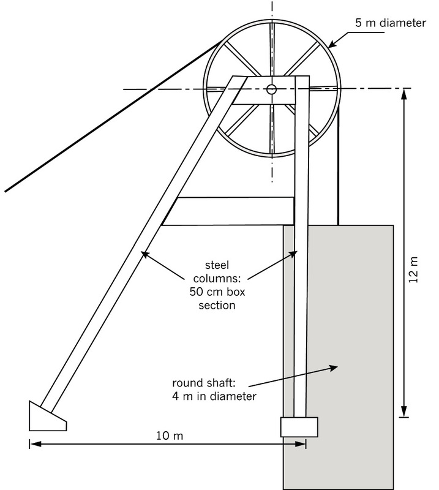<figcaption>Figure 5: A working drawing of a head frame</figcaption></figure><p xmlns="http://www.w3.org/1999/xhtml" class="x--Body-investigation-hanging--1-3- para-style-override-55">1.
    Draw your head frame in the grid below. Use Figure 5 to help
    you. You should show all the dimensions for the main parts of
    your head frame design.</p>

    <p xmlns="http://www.w3.org/1999/xhtml" class="x--Body-investigation-hanging--1-3- para-style-override-55">
    <b>Note</b>: You may need
    to add triangulation to make your structure stronger.</p>

    <p xmlns="http://www.w3.org/1999/xhtml" class="x--Body-investigation-hanging">You don't have to draw
    this to scale.</p>

    <p xmlns="http://www.w3.org/1999/xhtml" class="x--Body-investigation-hanging">Don't show dimensions.
    [4]</p>

    <figure xmlns="http://www.w3.org/1999/xhtml">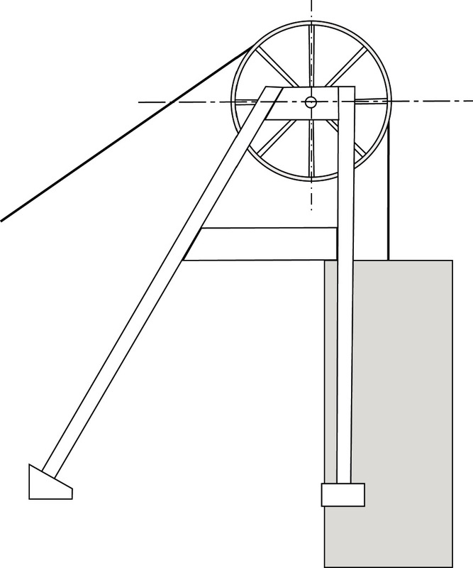<figcaption>Figure 5 repeated</figcaption></figure><p xmlns="http://www.w3.org/1999/xhtml" class="x--Body-Text"><span></span> </p>

    <h4 xmlns="http://www.w3.org/1999/xhtml">Make a 2D scale drawing</h4>

    <p xmlns="http://www.w3.org/1999/xhtml" class="x--Body-investigation-hanging--1-3-">2. Now use
    rulers and set squares to draw a more accurate version of your
    company's head frame design. Use the grid below. [5]</p>

    <div xmlns="http://www.w3.org/1999/xhtml" class="aside">
      <p class="x--Body-box-no-indent"><b>Scale:</b></p>

      <p class="x--Body-box-no-indent">Suggested scale for a small
      head frame: 1 cm = 1 m.</p>

      <p class="x--Body-box-no-indent">Suggested scale for a larger
      head frame: 1 cm = 2 m.</p>
    </div>

    <p xmlns="http://www.w3.org/1999/xhtml" class="x--Body-Text para-style-override-2"><span></span></p>

    <h4 xmlns="http://www.w3.org/1999/xhtml" class="x--Head-C para-style-override-10">Make a 3D isometric
    drawing</h4>

    <p xmlns="http://www.w3.org/1999/xhtml" class="x--Body-text-1-3">The picture in Figure 6 shows a 3D
    isometric view of a head frame design. The drawing has been
    done on <b>isometric</b>
    grid paper, using instruments such as rulers and
    setsquares.</p>
    <div xmlns="http://www.w3.org/1999/xhtml" class="aside">
      <p class="x--Body-box-no-indent"><b>Isometric</b> means equal
      measure.</p>

      <p class="x--Body-box-no-indent">One little triangle in this
      grid, represents 50 cm in each direction of the real
      structure.</p>

      <p class="x--Body-box-no-indent">That means that a line that
      crosses 10 triangles is 500 cm or 5 m long.</p>
    </div>
    <p xmlns="http://www.w3.org/1999/xhtml" class="x--Body-indent-1-3">This view shows all three
    dimensions of the structure. You can see the sizes and the
    detail of the height, width and length.</p>


    <figure xmlns="http://www.w3.org/1999/xhtml">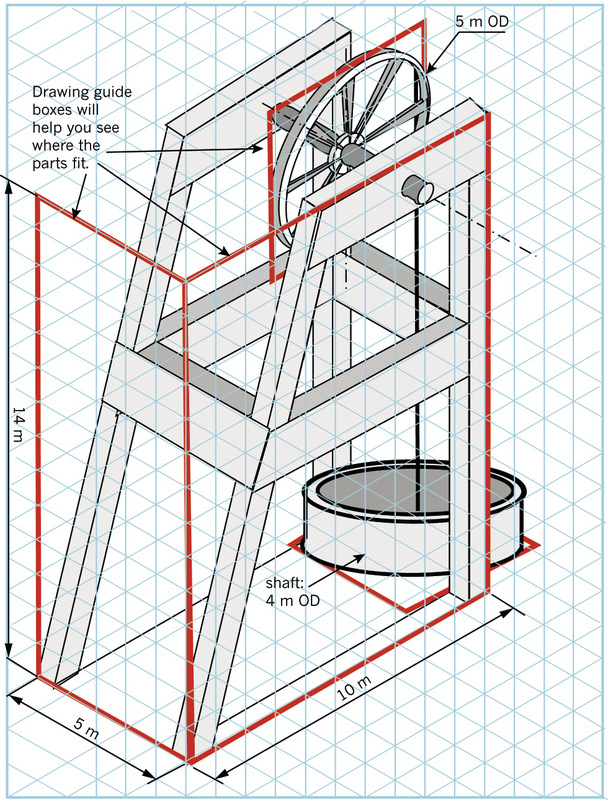<figcaption>Figure 6: A 3D isometric view of a head frame design</figcaption></figure><p xmlns="http://www.w3.org/1999/xhtml" class="x--Body-investigation-hanging">3. Make a 3D drawing
    of your own head frame on the isometric grid below. [6]</p>

    <p xmlns="http://www.w3.org/1999/xhtml" class="x--Body-investigation-hanging"><span>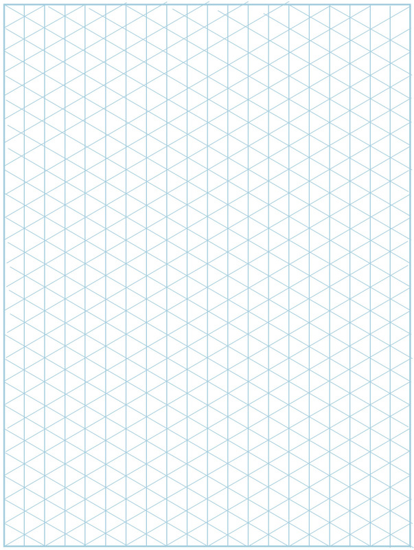</span></p>

    <p xmlns="http://www.w3.org/1999/xhtml" class="x--Body-Text para-style-override-54">Total [15]</p>

   <h2 xmlns="http://www.w3.org/1999/xhtml" id="toc-id-23">Week 3</h2>

    <h4 xmlns="http://www.w3.org/1999/xhtml">How much will it cost?</h4>

    <p xmlns="http://www.w3.org/1999/xhtml" class="x--Body-Text">To win a tender, you will have to show
    that your design is going to be the best and the best value for
    money. The table on the next page will help you to work out a
    tender budget.</p>

    <h3 xmlns="http://www.w3.org/1999/xhtml" class="x--Head-investigation-2-line para-style-override-52">Design: make a list of materials and work out thebudget(30 minutes)</h3>

    <p xmlns="http://www.w3.org/1999/xhtml" class="x--Body-Text para-style-override-28"><b>Individual work</b></p>

    <p xmlns="http://www.w3.org/1999/xhtml" class="x--Body-investigation-hanging">Hints:</p>

    <ul xmlns="http://www.w3.org/1999/xhtml"><li class="x--Body-text-bullet">Look at your head frame
      drawing. Calculate the total length of steel column you will
      need for the legs of the head frame. Then enter the total
      length into the Quantity Needed row of the table. Calculate
      the cost of the total length of steel columns that you need
      to buy and enter the amount into the table.</li>

      <li class="x--Body-text-bullet">Calculate the total length of
      steel you will need for the cross braces and enter this total
      into the table. Calculate the cost of the steel needed for
      bracing.</li>

      <li class="x--Body-text-bullet">Complete the rest of the
      table. Enter quantities you will need and calculate the cost
      estimate for each item.</li>

      <li class="x--Body-text-bullet">Your project advisor says
      that you will need one project manager, one engineer, four
      artisans, four semi-skilled workers and 12 unskilled workers
      on the project, and that it will take six months to complete.
      Calculate the labour cost estimate for each of these
      workers.</li>

      <li class="x--Body-text-bullet">Calculate the "subtotal" for
      each of the three cost categories, namely "steel for the head
      frame", "lift components" and "labour".</li>

      <li class="x--Body-text-bullet">What will your total project
      cost be? Add up all of the subtotals of the different cost
      categories to calculate the total project cost.</li>
    </ul><p xmlns="http://www.w3.org/1999/xhtml" class="x--Body--above"><b>Mark allocation</b></p>

    <ul xmlns="http://www.w3.org/1999/xhtml"><li class="x--Body-text-bullet">good estimates of materials
      quantities(1)</li>

      <li class="x--Body-text-bullet">correct calculation of labour
      quantities (person/hours) (1)</li>

      <li class="x--Body-text-bullet">calculations of cost estimate
      per item(2)</li>

      <li class="x--Body-text-bullet">calculation of subtotal and
      total project cost(1)</li>
    </ul><p xmlns="http://www.w3.org/1999/xhtml" class="x--Body-Text para-style-override-51">Total [5]</p>

    <table xmlns="http://www.w3.org/1999/xhtml" id="table-25" class="border-plain"><tbody><tr class="Row-Column-181"><td class="none">
            <p class="x--Body-Text para-style-override-28"><b>Item</b></p>
          </td>

          <td class="None cell-style-override-4">
            <p class="x--Body-Text para-style-override-56">cost per
            unit</p>
          </td>

          <td class="None cell-style-override-4">
            <p class="x--Body-Text para-style-override-56">quantity
            needed</p>
          </td>

          <td class="None cell-style-override-4">
            <p class="x--Body-Text para-style-override-56">cost
            estimate</p>
          </td>
        </tr><tr class="Row-Column-181"><td class="none"/>

          <td class="none"/>

          <td class="none"/>

          <td class="none"/>
        </tr><tr class="Row-Column-181"><td class="none" colspan="4">
            <p class="x--Body-Text para-style-override-28"><b>Costs of steel for the head frame</b></p>
          </td>
        </tr><tr class="Row-Column-181"><td class="none">
            <p class="x--Body-Text">steel column</p>
          </td>

          <td class="None cell-style-override-4">
            <p class="x--Body-Text">R500 per metre</p>
          </td>

          <td class="None cell-style-override-4">
            
          </td>

          <td class="None cell-style-override-4">
            
          </td>
        </tr><tr class="Row-Column-182"><td class="none">
            <p class="x--Body-Text">steel for cross braces</p>
          </td>

          <td class="None cell-style-override-4">
            <p class="x--Body-Text">R20 per metre</p>
          </td>

          <td class="None cell-style-override-4">
            
          </td>

          <td class="None cell-style-override-4">
            
          </td>
        </tr><tr class="Row-Column-181"><td class="none" colspan="3">
            <p class="x--Body-Text para-style-override-57" style="text-align:right">
            <b>Sub-total: Costs for steel frame</b></p>
          </td>

          <td class="table-total">
            
          </td>
        </tr><tr class="Row-Column-181"><td class="none" colspan="3"/>

          <td class="none"/>
        </tr><tr class="Row-Column-181"><td class="none" colspan="4">
            <p class="x--Body-Text para-style-override-28"><b>Costs of lift components</b></p>
          </td>
        </tr><tr class="Row-Column-181"><td class="none">
            <p class="x--Body-Text">sheave wheels</p>
          </td>

          <td class="None cell-style-override-4">
            <p class="x--Body-Text">R 150 000</p>
          </td>

          <td class="None cell-style-override-4">
            
          </td>

          <td class="None cell-style-override-4">
            
          </td>
        </tr><tr class="Row-Column-181"><td class="none">
            <p class="x--Body-Text">winch and motor</p>
          </td>

          <td class="None cell-style-override-4">
            <p class="x--Body-Text">R 1 200 000</p>
          </td>

          <td class="None cell-style-override-4">
            
          </td>

          <td class="None cell-style-override-4">
            
          </td>
        </tr><tr class="Row-Column-182"><td class="none">
            <p class="x--Body-Text">cable</p>
          </td>

          <td class="None cell-style-override-4">
            <p class="x--Body-Text">R 100 per metre</p>
          </td>

          <td class="None cell-style-override-4">
            
          </td>

          <td class="None cell-style-override-4">
            
          </td>
        </tr><tr class="Row-Column-181"><td class="none">
            <p class="x--Body-Text">cage and skip</p>
          </td>

          <td class="None cell-style-override-4">
            <p class="x--Body-Text">R 350 000</p>
          </td>

          <td class="None cell-style-override-4">
            
          </td>

          <td class="None cell-style-override-4">
            
          </td>
        </tr><tr class="Row-Column-181"><td class="none" colspan="3">
            <p class="x--Body-Text para-style-override-57" style="text-align:right">
            <b>Sub-total: Costs of lift components</b></p>
          </td>

          <td class="table-total">
            
          </td>
        </tr><tr class="Row-Column-181"><td class="none" colspan="3"/>

          <td class="none"/>
        </tr><tr class="Row-Column-181"><td class="none" colspan="4">
            <p class="x--Body-Text para-style-override-28"><b>Labour costs</b></p>
          </td>
        </tr><tr class="Row-Column-182"><td class="none">
            <p class="x--Body-Text">project manager</p>
          </td>

          <td class="None cell-style-override-4">
            <p class="x--Body-Text">R 30 000 per month</p>
          </td>

          <td class="None cell-style-override-4">
            
          </td>

          <td class="None cell-style-override-4">
            
          </td>
        </tr><tr class="Row-Column-182"><td class="none">
            <p class="x--Body-Text">engineers</p>
          </td>

          <td class="None cell-style-override-4">
            <p class="x--Body-Text">R 30 000 per month</p>
          </td>

          <td class="None cell-style-override-4">
            
          </td>

          <td class="None cell-style-override-4">
            
          </td>
        </tr><tr class="Row-Column-182"><td class="none">
            <p class="x--Body-Text">artisans</p>
          </td>

          <td class="None cell-style-override-4">
            <p class="x--Body-Text">R 25 000 per month</p>
          </td>

          <td class="None cell-style-override-4">
            
          </td>

          <td class="None cell-style-override-4">
            
          </td>
        </tr><tr class="Row-Column-182"><td class="none">
            <p class="x--Body-Text">semi-skilled workers</p>
          </td>

          <td class="None cell-style-override-4">
            <p class="x--Body-Text">R 20 000 per month</p>
          </td>

          <td class="None cell-style-override-4">
            
          </td>

          <td class="None cell-style-override-4">
            
          </td>
        </tr><tr class="Row-Column-183"><td class="none">
            <p class="x--Body-Text">unskilled workers</p>
          </td>

          <td class="None cell-style-override-4">
            <p class="x--Body-Text">R 12 000 per month</p>
          </td>

          <td class="None cell-style-override-4">
            
          </td>

          <td class="None cell-style-override-4">
            
          </td>
        </tr><tr class="Row-Column-181"><td class="none" colspan="3">
            <p class="x--Body-Text para-style-override-57" style="text-align:right">
            <b>Sub-total: Labour costs</b></p>
          </td>

          <td class="table-total">
            
          </td>
        </tr><tr class="Row-Column-181"><td class="none"/>

          <td class="none"/>

          <td class="none"/>

          <td class="none"/>
        </tr><tr class="Row-Column-181"><td class="none" colspan="3">
            <p class="x--Body-Text para-style-override-57" style="text-align:right"><b>TOTAL
            PROJECT COST:</b></p>
          </td>

          <td class="table-total">
            
          </td>
        </tr></tbody></table><h3 xmlns="http://www.w3.org/1999/xhtml">Make a model head frame (30 minutes + 60 minutes)</h3>

    <p xmlns="http://www.w3.org/1999/xhtml" class="x--Body-Text para-style-override-28"><b>Team work</b></p>

    <p xmlns="http://www.w3.org/1999/xhtml" class="x--Body-indent">Now it is time to make a model of
    your head gear. You will need to make several different
    parts:</p>

    <ul xmlns="http://www.w3.org/1999/xhtml"><li class="x--Body-text-bullet">the head frame with its
      sheave wheel,</li>

      <li class="x--Body-text-bullet">the mine winch, and</li>

      <li class="x--Body-text-bullet">the model lift.</li>
    </ul><p xmlns="http://www.w3.org/1999/xhtml" class="x--Body-investigation-hanging">In this activity, you
    will make the first part, the head frame.</p>

    <p xmlns="http://www.w3.org/1999/xhtml" class="x--Body-Text"><b>Remember</b>: Your teacher will
    watch you while you make your model to see how well you:</p>

    <ul xmlns="http://www.w3.org/1999/xhtml"><li class="x--Body-text-bullet">work as a team,</li>

      <li class="x--Body-text-bullet">measure and mark things
      properly,</li>

      <li class="x--Body-text-bullet">cut and join parts accurately
      and with thecorrect tools,</li>

      <li class="x--Body-text-bullet">finish and decorate your
      model, and</li>

      <li class="x--Body-text-bullet">use safe working practices.

        <div class="aside">
          <p class="x--Body-box-heading"><b>Safety tips:</b></p>

          <p class="x--Body-box-no-indent">Never play with cutting
          tools. Never point the sharp end at someone else. Keep
          your tools neat and clean and in good working order. Do
          not spill glue or leave the lid open as the fumes are
          poisonous.</p>
        </div> 
      </li>
    </ul><p xmlns="http://www.w3.org/1999/xhtml" class="x--Body-indent">Not everything you try will work
    well. So don't beafraid to change your designs to improve them
    as you go along.</p>

    <h4 xmlns="http://www.w3.org/1999/xhtml">Make the steel columns</h4>

    <p xmlns="http://www.w3.org/1999/xhtml" class="x--Body-Text">You can make your steel columns using
    cardboard. Look at Figure 7 to help you. You can make round or
    rectangular columns depending on the <b>former</b> you use:</p>

    <figure xmlns="http://www.w3.org/1999/xhtml">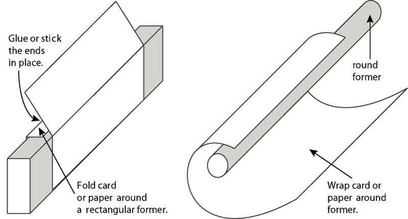<figcaption>Figure 7: How to make the steel columns</figcaption></figure><ul xmlns="http://www.w3.org/1999/xhtml"><li class="x--Body-text-bullet">If you use a rectangular
      former, you will get a channel. A strip of wood 2 cm
      × 1 cm will workwell for this.</li>

      <li class="x--Body-text-bullet">If you use a round former,
      you can make roundcolumns out of cardboard. A 10 cm
      dowelworks well for this.

        <div class="aside">
          <p class="x--Body-box-no-indent">A <b>former</b> is a shape that can
          be used to make tubes. For example, when you wrap a flat
          sheet over a rectangular former, you make a tube with a
          rectangular cross section.</p>
        </div> 
      </li>
    </ul><p xmlns="http://www.w3.org/1999/xhtml" class="x--Body-investigation-hanging">1. Choose how you will
    make your columns and thenmake all the pieces you will need for
    your model. Have another look at Figure 7 to help you. (1)</p>

    <h4 xmlns="http://www.w3.org/1999/xhtml">Make the cross braces</h4>

    <p xmlns="http://www.w3.org/1999/xhtml" class="x--Body-text-1-3">You can make cross braces by
    joining flat pieces of corrugated cardboard together. You can
    use tape or glue to join the flat pieces. Look at Figure 8 to
    help you. Figure 8 shows three types of cro<a id="Anchor-16"/>ss braces: angle irons, T-beams and
    I-beams.</p>

    <p xmlns="http://www.w3.org/1999/xhtml" class="x--Body-investigation-hanging--1-3-">2. Decide which
    of these cross braces you need for your head frame. Then make
    the cross braces you need. You will use these cross braces and
    the columns you made earlier to make a model of your head
    frame. (2)</p>

    <figure xmlns="http://www.w3.org/1999/xhtml">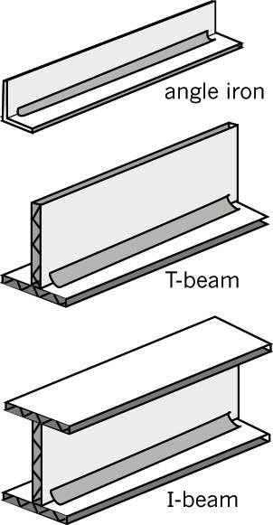<figcaption>Figure 8: Cross braces</figcaption></figure><h4 xmlns="http://www.w3.org/1999/xhtml" class="x--Head-C para-style-override-7">Make flat frames</h4>

    <p xmlns="http://www.w3.org/1999/xhtml" class="x--Body-Text">Look at Figure 9. This figure shows one
    side of a frame.</p>

    <ul xmlns="http://www.w3.org/1999/xhtml"><li class="x--Body-text-bullet">T-Beams have been used to
      join the vertical and the sloping column.</li>

      <li class="x--Body-text-bullet">Cross bracing has been added
      to strengthen the lower half of the frame.</li>
    </ul><p xmlns="http://www.w3.org/1999/xhtml" class="x--Body-investigation-hanging">3. Carefully cut your
    beams to the right size and shape to fit neatly between the
    columns. Then glue or tape them on. (2)</p>

    <p xmlns="http://www.w3.org/1999/xhtml" class="x--Body-investigation-hanging">4. Cut your angle
    sections so that they can fit across the columns. Trim the ends
    so that the outside of the angle can be joined to the side of
    the column, but remember that the angle has to fit neatly
    between the columns. (2)</p>

    <p xmlns="http://www.w3.org/1999/xhtml" class="x--Body-investigation-hanging">5. When you are happy
    with your first side frame, make the second inexactly the same
    way. (1)</p>

    <h4 xmlns="http://www.w3.org/1999/xhtml">Join your side frames</h4>

    <p xmlns="http://www.w3.org/1999/xhtml" class="x--Body-investigation-hanging">6. Now make your head
    frame by joining your two side frames together. (2)</p>

    <figure xmlns="http://www.w3.org/1999/xhtml">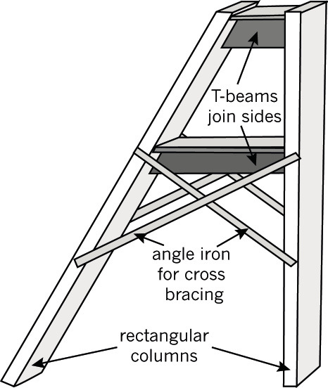<figcaption>Figure 9: How to make one side of a
    frame</figcaption></figure><h4 xmlns="http://www.w3.org/1999/xhtml">Make a sheave wheel</h4>

    <p xmlns="http://www.w3.org/1999/xhtml" class="x--Body-Text">Look at the pictures shown in Figure
    10. They show two ways to make a model sheave wheel:</p>

    <ul xmlns="http://www.w3.org/1999/xhtml"><li class="x--Body-text-bullet">You can use a round cardboard
      box, such as the ones used to pack cheese triangles.</li>

      <li class="x--Body-text-bullet">You can cut three circles
      from corrugated cardboard and sandwich them together.</li>
    </ul><p xmlns="http://www.w3.org/1999/xhtml" class="x--Body-indent">For both methods, a plastic straw has
    been used to make a bearing through the middle of the wheel.
    This bearing will make the wheel turn easily on its axle or
    shaft.</p>

    <p xmlns="http://www.w3.org/1999/xhtml" class="x--Body-investigation-hanging">7. Make you own sheave
    wheel. Try to make it as close to the correct scale size as you
    can. Use Figure 10 to help you. (1)</p>

<figure xmlns="http://www.w3.org/1999/xhtml">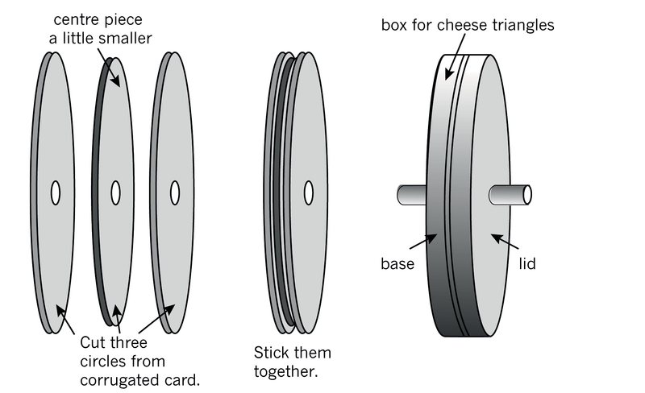<figcaption>Figure 10: Two ways to make a model
    sheave wheel</figcaption></figure><h4 xmlns="http://www.w3.org/1999/xhtml">Mount the sheave wheel on an axle and fit it to the frame</h4>

    <p xmlns="http://www.w3.org/1999/xhtml" class="x--Body-Text">Your sheave wheel has to turn easily.
    It needs to have an axle passing through the centre of the
    wheel. You can use a dowel stick, about 4 mm in diameter, or a
    long nail (about 60 cm long) for your axle.</p>

    <p xmlns="http://www.w3.org/1999/xhtml" class="x--Body-indent">Look at the picture in Figure 11. A
    sheave wheel has been added to the top of a head frame in the
    following way:</p>

    <ul xmlns="http://www.w3.org/1999/xhtml"><li class="x--Body-text-bullet">The axle is taped onto the
      top of the head frame.</li>

      <li class="x--Body-text-bullet">The wheel, with a straw
      through its centre, can rotate freely on the axle.</li>

      <li class="x--Body-text-bullet para-style-override-15">
      <span>Extra pieces of straw ha</span>ve been added to keep
      the wheel in the centre of the ax<span>le.</span></li>
    </ul><p xmlns="http://www.w3.org/1999/xhtml" class="x--Body-investigation-hanging">8. Now add your sheave
    wheel to its head frame. Use Figure 11 to help you. (2)</p>

    <p xmlns="http://www.w3.org/1999/xhtml" class="x--Body-indent">Will your axle bend? Have a look at
    the axle supporting your wheel. This axle will have to carry
    all the weight of the lift. Does it have enough support? If the
    distance between the axle and the supports are too long, then
    it will bend and might break.</p>

    <p xmlns="http://www.w3.org/1999/xhtml" class="x--Body-indent">If you need to, add extra supports
    for the axle at the top of the head frame.</p>

    <figure xmlns="http://www.w3.org/1999/xhtml">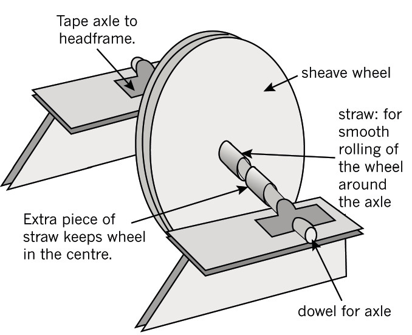<figcaption>Figure 11: How to
    add a sheave wheel to the top of a head frame</figcaption></figure><p xmlns="http://www.w3.org/1999/xhtml" class="x--Body-Text para-style-override-51">Total [13]</p>

    <h3 xmlns="http://www.w3.org/1999/xhtml">Next week</h3>

    <p xmlns="http://www.w3.org/1999/xhtml" class="x--Body-Text para-style-override-2">Next week, you
    will complete your mini-PAT. You will make a winch and a lift
    and then you will present your tender.</p>

    <h2 xmlns="http://www.w3.org/1999/xhtml" id="toc-id-24">Week 4</h2>

    <h4 xmlns="http://www.w3.org/1999/xhtml">Communicate a headgear tender</h4>

    <p xmlns="http://www.w3.org/1999/xhtml" class="x--Body-Text">This week is the last week of your mini
    practical assessment task for mechanical systems in Grade
    8.</p>

    <p xmlns="http://www.w3.org/1999/xhtml" class="x--Body-indent">You will make your mine winch and add
    it to the head frame you completed last week. Then you will add
    a lift, commonly called a cage, to your model.</p>

    <p xmlns="http://www.w3.org/1999/xhtml" class="x--Body-indent">After testing your system and
    adjusting it, you will collect all the work you have done so
    far for this mini-PAT, and use it to prepare a tender
    presentation to present to the tender board of the Platinum
    Stars Mining Company.</p>

    <figure xmlns="http://www.w3.org/1999/xhtml">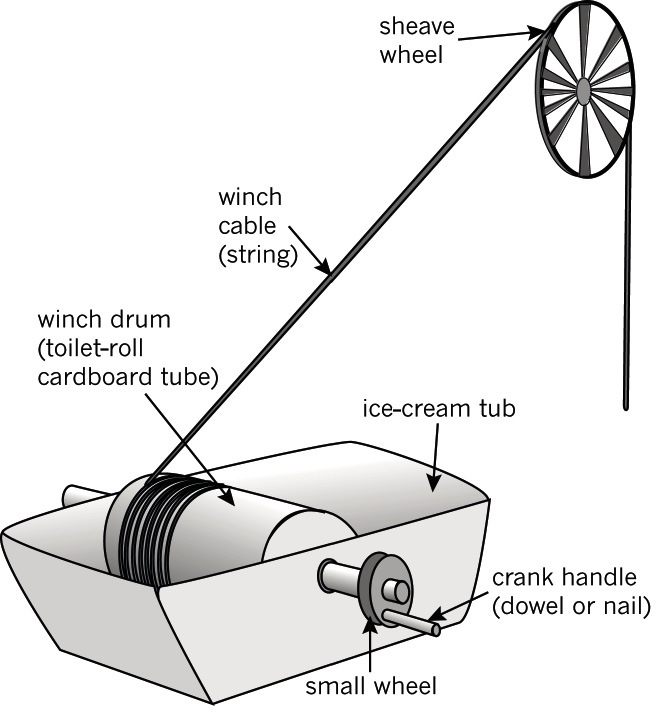<figcaption>Figure 12: How to make a model mine winch</figcaption></figure><h3 xmlns="http://www.w3.org/1999/xhtml">Complete your model: make a winch and cage (20 minutes)</h3>

    <p xmlns="http://www.w3.org/1999/xhtml" class="x--Body-Text">Do you remember investigating crank
    winches in Chapter 4 and in this chapter? Look at Figure 12
    again. It shows you how to make a model mine winch
    yourself.</p>

    <ul xmlns="http://www.w3.org/1999/xhtml"><li class="x--Body-text-bullet">The winding drum for this
      mine winch was made from a toilet-roll cardboard tube.</li>

      <li class="x--Body-text-bullet">The winch drum has been put
      onto a 2 <i>l</i> plastic
      ice-cream tub. This will be the winch house.</li>

      <li class="x--Body-text-bullet">This winch does not have a
      motor attached. Instead it uses a crank handle. But if you
      have a motor, then you can connect a belt drive or a gear
      system to the winch's drive wheel instead.</li>
    </ul><p xmlns="http://www.w3.org/1999/xhtml" class="x--Body-indent">Here are a few important things to
    remember when making a mine winch such as this one.</p>

    <ul xmlns="http://www.w3.org/1999/xhtml"><li class="x--Body-text-bullet">The drum has to turn when the
      crank handle isturned. That means that the shaft that
      connectsthe small wheel with the crank handle to thewinding
      drum must be tightly attached to thedrum, and to the drive
      wheel. You can use glueor tape to make sure that the shaft is
      firmly stuck onto the drum and wheel.</li>

      <li class="x--Body-text-bullet">The shaft must be able to
      turn easily in the holes on the sides of the ice-cream
      container.

        <div class="aside">
          <p class="x--Body-box-no-indent para-style-override-24"><b>Shafts and axles:</b></p>

          <p class="x--Body-box-no-indent">The centre of a wheel is
          called a <b>shaft</b>
          when it turns with the wheel.</p>

          <p class="x--Body-box-no-indent">When the centre of the
          wheel stays still and the wheel slides over it, it is
          called an <b>axle</b>.</p>
        </div> 
      </li>

      <li class="x--Body-text-bullet">The rope or string must be
      firmly attached to the winding drum and it must not be able
      to come off. Imagine what would happen to the lift cage if it
      did.</li>
    </ul><p xmlns="http://www.w3.org/1999/xhtml" class="x--Body-investigation-hanging">1. Make a winch drum
    of your own. Remember it must be able to lift and lower a cage
    into the mine.</p>

    <p xmlns="http://www.w3.org/1999/xhtml" class="x--Body-investigation-hanging para-style-override-8">
    Will your cage be square or round? You can use a paper-towel
    tube for a round cage or any square box for a square cage. Tie
    your lift cage to the shaft side of the sheave wheel. [2]</p>

    <div xmlns="http://www.w3.org/1999/xhtml" class="note">
      <p><b>Test your head gear</b></p><p>
With your cage and your winch attached to the
head frame, you now have a complete system.
Test your system to ensure that you can lift and
lower miners, and lift mined ore from a shaft
underground.
</p>
</div>


    <h3 xmlns="http://www.w3.org/1999/xhtml">Evaluate the head gear (10 minutes)</h3>

    <p xmlns="http://www.w3.org/1999/xhtml" class="x--Body-Text para-style-override-28"><b>Evaluate your solution</b></p>

    <p xmlns="http://www.w3.org/1999/xhtml" class="x--Body-Text">Look at the model your team has
    made.</p>

    <p xmlns="http://www.w3.org/1999/xhtml" class="x--Body-investigation-hanging">1. Do you think the
    head gear is suitable for transporting miners to a depth of 500
    m underground, and for lifting mined rock samples from
    underground? Explain your answer.</p>
    <hr xmlns="http://www.w3.org/1999/xhtml"/><p xmlns="http://www.w3.org/1999/xhtml" class="x--Body-investigation-hanging">2. What have you done
    to ensure that your system will be safe?</p>
    <hr xmlns="http://www.w3.org/1999/xhtml"/><p xmlns="http://www.w3.org/1999/xhtml" class="x--Body-investigation-hanging">3. What have you done
    to make your headgear look good so that the community will not
    complain about the mine ruining the area?</p>
    <hr xmlns="http://www.w3.org/1999/xhtml"/><p xmlns="http://www.w3.org/1999/xhtml" class="x--Body-investigation-hanging">4. Do you think the
    environment will be damaged in any way by your structure?</p>
    <hr xmlns="http://www.w3.org/1999/xhtml"/><p xmlns="http://www.w3.org/1999/xhtml" class="x--Body-investigation-hanging">5. Why should the
    tender board choose your head gear?</p>
    <hr xmlns="http://www.w3.org/1999/xhtml"/><p xmlns="http://www.w3.org/1999/xhtml" class="x--Body-investigation-hanging">6. Are there any
    things the tender board won't like?</p>
    <hr xmlns="http://www.w3.org/1999/xhtml"/><h3 xmlns="http://www.w3.org/1999/xhtml">Present your solution to platinum stars (90 minutes)</h3>

    <h4 xmlns="http://www.w3.org/1999/xhtml">Prepare your tender</h4>

    <p xmlns="http://www.w3.org/1999/xhtml" class="x--Body-investigation-hanging">1. Prepare a team
    presentation to the tender board of the Platinum Stars Mining
    Company. Each member of your team should talk about one of the
    points below:</p>

    <ul xmlns="http://www.w3.org/1999/xhtml"><li class="x--Body-text-bullet para-style-override-58">Your
      head frame ideas. This person should show the sketches and
      drawings you did while designing your head frame.</li>

      <li class="x--Body-text-bullet para-style-override-58">Your
      winch idea. This person should show the sketches and drawings
      you did while designing your mine winch.</li>

      <li class="x--Body-text-bullet para-style-override-58">The
      budget. This person should talk about the costs of making
      your headgear.</li>

      <li class="x--Body-text-bullet para-style-override-58">Why
      the tender board should choose your solution. This person
      should use your 3D model to convince the tender board that
      your solution is the best.</li>
    </ul><h4 xmlns="http://www.w3.org/1999/xhtml">Present your tender</h4>

    <p xmlns="http://www.w3.org/1999/xhtml" class="x--Body-investigation-hanging">2. Now present your
    tender bid to the tender board. (3)</p>

    <h4 xmlns="http://www.w3.org/1999/xhtml">Evaluate different tenders</h4>

    <p xmlns="http://www.w3.org/1999/xhtml" class="x--Body-investigation-hanging">3. While listening to
    other people's tender presentations, write down some of the
    best points about their tenders.</p>
    <hr xmlns="http://www.w3.org/1999/xhtml"/><p xmlns="http://www.w3.org/1999/xhtml" class="x--Body-investigation-hanging">4. Which tender do you
    think should win? Explain your decision.</p>

    <p xmlns="http://www.w3.org/1999/xhtml" class="x--Body-investigation-hanging"><b>Remember</b>: To be good at
    evaluating you must show that you can judge other people's work
    objectively. (1)</p>
    <hr xmlns="http://www.w3.org/1999/xhtml"/><p xmlns="http://www.w3.org/1999/xhtml" class="x--Body-Text para-style-override-51">Total [4]</p>

 
  
  </div>
</div>